Stacked and divided ribbons
A sankey is a stacked area chart whose stacks are nodes. Each ribbon end
is a data row, the ends stack inside their node with the ordinary
stack operator, and the ribbon stays one-to-one.
-
Prototypes drew
parallel sets, a sankey tree, and the full 48-node energy sankey with
no core change, using today's
stack,spreadandribbon. -
What is missing is small: a
unpivotdata helper,ribbon({ by })to name which rows form one ribbon, and, for chord diagrams,ribbon({ at })to say which part of a node each end attaches to. -
The runner-up has the ribbon allocate its own ends on nodes placed by
anything:
ribbon({ from, to, size }). It wins if ribbons over independently placed nodes become a priority.
stack, so it desugars into the existing core,
keeps one stacking mechanism, and realizes the direction recorded in #745:
ribbons one-to-one per row, plus per-edge span allocation.
Update after review: Round 2 explores syntax that follows the data's shape (a record becomes direct-style children, a list becomes a flow), with rendered prototypes and four new decisions (9 to 12). Side-by-side specs. Back to the drawing board: Sums, products, and ribbons reframes both proposals as two sides of one structure.
Proposal 1 vs proposal 2, side by side
Proposal 1 is round 1's Approach B, "ends are rows":
reshape to one row per end with unpivot, then one flat flow.
Proposal 2 is round 2, "syntax follows the data": a list
becomes a flow and a record becomes direct-style children. Both are written
in their target spellings. Each picture is the closest render that exists,
and its caption says how it was made.
Parallel sets
chart(titanic)
.flow(
derive(
unpivot({
on: ["class", "sex", "survived"],
variable: "axis",
value: "category",
id: "path",
})
),
spread({ by: "axis", dir: "x", spacing: 120 }),
spread({ by: field("category").sort(), dir: "y", spacing: 12 }),
stack({ by: field("rank").sort(), dir: "y" }) // end order
)
.mark(rect({ w: 12, h: "count", fill: "class" }))
.layer(ribbon({ by: "path", opacity: 0.6 }));
const axes = cols(["class", "sex", "survived"]);
chart(titanic)
.mark(
spread({ dir: "x", spacing: 120 }, [
chart()
.flow(spread({ by: axes, dir: "y", spacing: 12 }), stack({ dir: "y" })) // end order
.mark(rect({ w: 12, h: "count", fill: "class" })),
])
)
.layer(ribbon({ opacity: 0.6 }));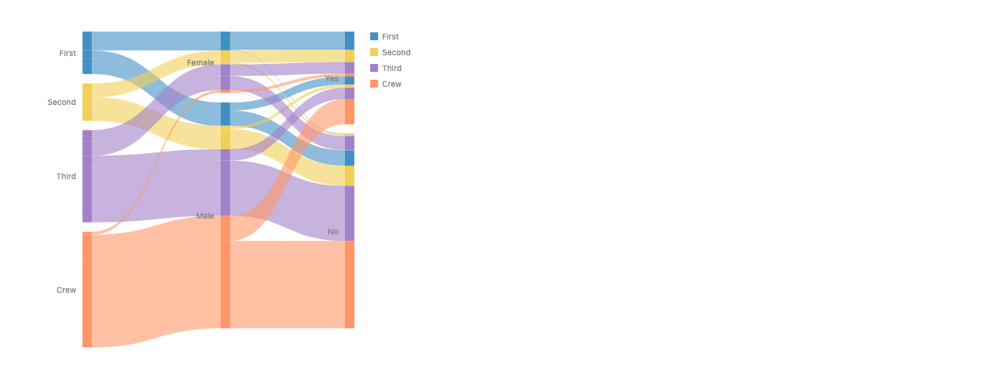
cols;
identical to the working .map version.
Reads more naturally: proposal 2. The three axes are written as one child per column, with no reshape and no id. Both still need an end order inside each category.
Parallel coordinates (penguins)
chart(penguins)
.flow(
derive(unpivot({ on: DIMS, variable: "dim", value: "v", id: "row" })),
spread({ by: "dim", dir: "x", spacing: 120 }),
scatter({ y: "v" }) // v mixes mm and g
)
.mark(circle({ r: 1.5, fill: "Species" }))
.layer(line({ by: "row", opacity: 0.3 }));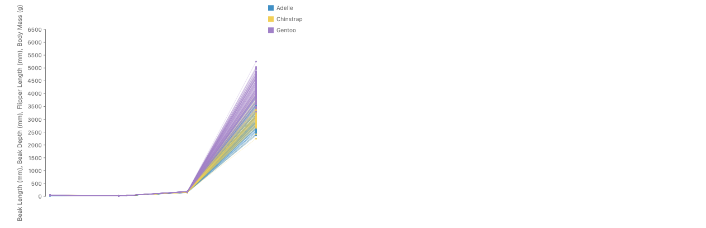
const dims = cols([
"Beak Length (mm)",
"Beak Depth (mm)",
"Flipper Length (mm)",
"Body Mass (g)",
]);
chart(penguins)
.mark(
spread({ dir: "x", spacing: 120 }, [
chart()
.flow(scatter({ y: dims }))
.mark(circle({ r: 1.5, fill: "Species" })),
])
)
.layer(line({ opacity: 0.3 }));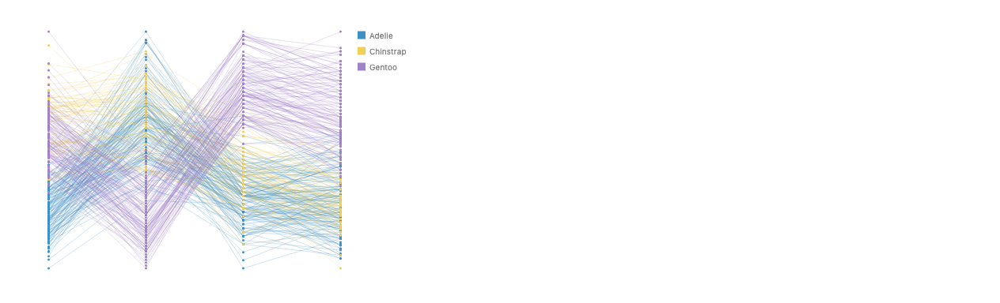
Reads more naturally: proposal 2, and it is the only one that is correct, because each axis keeps its own field, type and scale.
Energy sankey
chart(links)
.flow(
derive(
unpivot({
on: ["source", "target"],
variable: "side",
value: "node",
id: "link",
})
),
spread({ by: field("depth").sort(), dir: "x", spacing: 100 }),
spread({ by: field("node").sort(order), dir: "y", spacing: 10 }),
spread({
by: field("side").sort(["target", "source"]),
dir: "x",
spacing: 0,
}),
stack({ by: field("key").sort(), dir: "y" }) // far node's rank
)
.mark(rect({ w: 6, h: "value" }))
.layer(ribbon({ by: "link", opacity: 0.4, fill: "source" }));
chart(nodes) // nestJoin: each node gets in / out link lists
.flow(
spread({ by: field("depth").sort(), dir: "x", spacing: 100 }),
spread({ by: field("name").sort(order), dir: "y", spacing: 10 })
)
.mark(
spread({ dir: "x", spacing: 0 }, [
chart(field("in"))
.flow(stack({ dir: "y" }))
.mark(rect({ w: 6, h: "value" })),
chart(field("out"))
.flow(stack({ dir: "y" }))
.mark(rect({ w: 6, h: "value" })),
])
)
.layer(ribbon({ opacity: 0.4, fill: "source" }));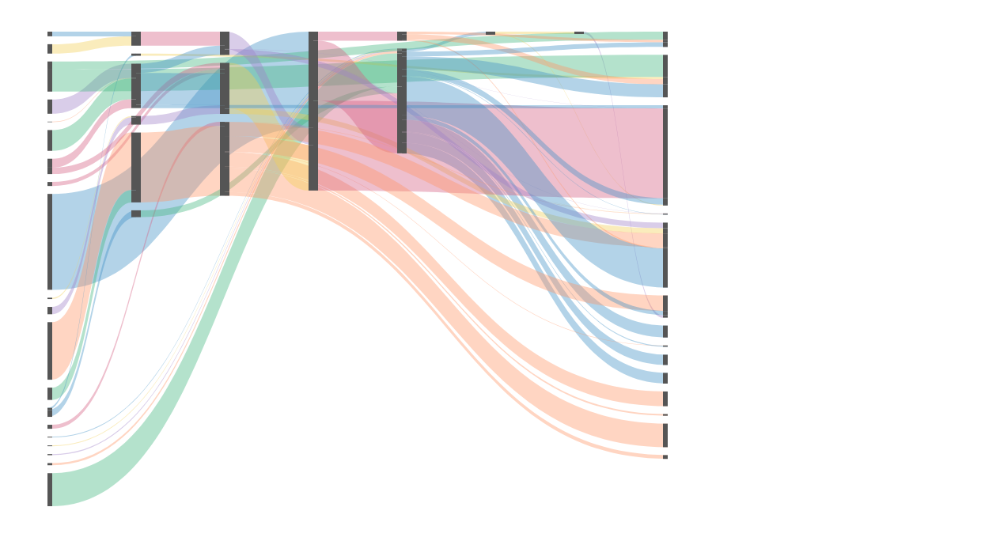
field("in");
same geometry.
Reads more naturally: roughly even. Proposal 2 says "a node has its in-links and out-links", like d3-sankey, but needs a nest join first and two levels of charts. Proposal 1 is one flat flow and names the ribbon's identity explicitly.
Sankey tree (titanic)
chart(titanic)
.flow(
derive(treeEnds(["class", "sex", "survived"], { id: "path" })), // decision 8
spread({ by: "depth", dir: "x", spacing: 64, alignment: "middle" }),
spread({ by: "class", dir: "y", spacing: 8 }),
spread({ by: field("sub").sort(), dir: "y", spacing: 4 }),
spread({ by: field("leaf").sort(), dir: "y", spacing: 2 }),
stack({ by: field("rank").sort(), dir: "y" })
)
.mark(rect({ w: 40, h: "count", fill: "class" }))
.layer(ribbon({ by: "path", opacity: 0.6 }));
treeEnds is the hand-written per-depth rows.
const box = rect({ w: 40, h: "count", fill: "class" });
const node = (gap, child) =>
spread({ dir: "x", spacing: 64, alignment: "middle" }, [
box,
chart(field("children"))
.flow(spread({ dir: "y", spacing: gap }))
.mark(child),
]);
chart(tree) // nestTree(titanic, ["class", "sex", "survived"], "count")
.flow(spread({ by: "class", dir: "y", spacing: 8 }))
.mark(node(4, node(2, box)))
.layer(ribbon({ opacity: 0.6, fill: "class" }));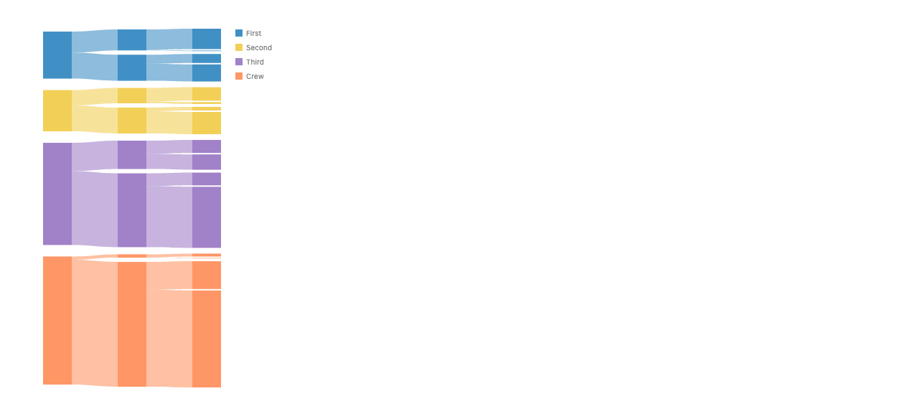
stackedEnds) have no spelling yet.
Reads more naturally: proposal 2. A node and its children
is the data's real shape. Proposal 1's blank-key depth rows and the
sub/leaf tiers are the least natural spec here.
Proposal 2 still needs a spelling for the slices of the parent's edge.
Chord diagram
layer({ coord: Coord.clock() }, [
chart(cells) // { group, other, value, chord, color }: one row per cell
.flow(
spread({
by: field("group").sort(names),
dir: "x",
spacing: 0.04,
y: 160,
h: 16,
}),
stack({ by: field("other").sort(names), dir: "x" })
)
.mark(rect({ w: "value", fill: "group" }))
.layer(ribbon({ by: "chord", at: "bottom", fill: "color", opacity: 0.67 })),
]);const cells = cols(names); // the matrix is wide: { name, black, blonde, brown, red }
layer({ coord: Coord.clock() }, [
chart(matrix)
.flow(
spread({
by: field("name").sort(names),
dir: "x",
spacing: 0.04,
y: 160,
h: 16,
})
)
.mark(stack({ dir: "x" }, [rect({ w: cells, fill: "name" })]))
.layer(
ribbon({ by: chordPair, at: "bottom", fill: "color", opacity: 0.67 })
),
]);
at.
Reads more naturally: even. Proposal 2 reads the matrix as it is, but a chord pairs cell (i, j) with cell (j, i), which are two different rows, so both spellings must name the pairing explicitly.
Harder references from #47
Four more complex pictures from issue #47, each a stress test. All four render today with no library changes, from the closest working spelling. Data: FrankenSankey is estimated from the picture, school days is read off its drop rows, and Beatles and trade are synthetic, because the PiCCL paper (Shi et al., VIS 2025) has no public data.
FrankenSankey: a stacked area that becomes a sankey (FT)
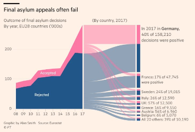
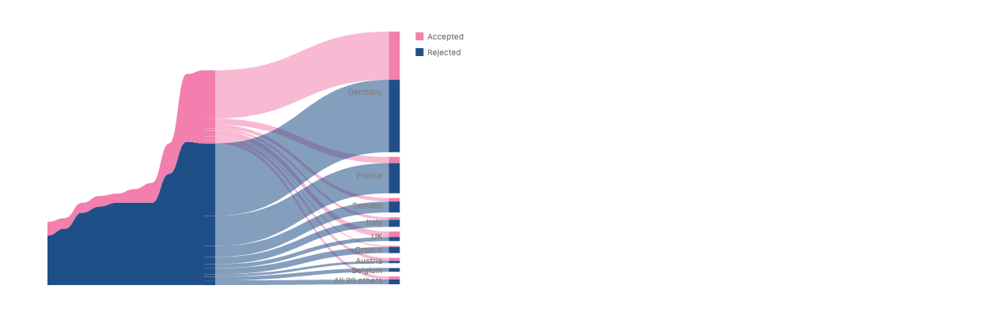
const ends = concat(
years,
unpivot({
on: ["bar", "country"],
variable: "side",
value: "node",
id: "link",
})(links)
);
chart(ends)
.flow(
spread({ by: "part", dir: "x", spacing: 150 }),
spread({ by: field("year").sort(), dir: "x", spacing: 22 }),
spread({ by: "node", dir: "y", spacing: 6 }),
stack({ by: field("rank").sort(), dir: "y" }) // bar: decision|country; country: decision
)
.mark(rect({ w: (d) => (d.side ? 14 : 0), h: "value", fill: "decision" }))
.layer(ribbon({ by: "band", fill: "decision" })) // the stacked area
.layer(ribbon({ by: "link", fill: "decision", opacity: 0.55 })); // the sankeyspread({ dir: "x", spacing: 150 }, [
spread({ dir: "x", spacing: 0 }, [
chart(years) // the stacked area
.flow(
spread({ by: "year", dir: "x", spacing: 22 }),
stack({ by: "decision", dir: "y" })
)
.mark(ribbon({ h: "value", fill: "decision" })),
chart(links) // the 2017 bar: decision first
.flow(
stack({ by: "decision", dir: "y" }),
stack({ by: "country", dir: "y" })
)
.mark(rect({ w: 14, h: "value", fill: "decision" })),
]),
chart(links) // the countries: country first
.flow(
spread({ by: "country", dir: "y", spacing: 6 }),
stack({ by: "decision", dir: "y" })
)
.mark(rect({ w: 14, h: "value", fill: "decision" })),
]).layer(ribbon({ fill: "decision", opacity: 0.55 }));
More natural: proposal 2. The end order on each side is
just that side's own flow: decision then country in the bar, country then
decision at the nodes. Proposal 1 needs a side-dependent rank,
a union of two kinds of rows, and a rule that rows with no
by key join no ribbon. New requirements: a
different end order on each side of a gap; a stacked area and a sankey in
one picture (two ribbon identities); labels on the far side; an explicit
shared-or-independent scale choice.
Seven emotional school days (PiCCL)
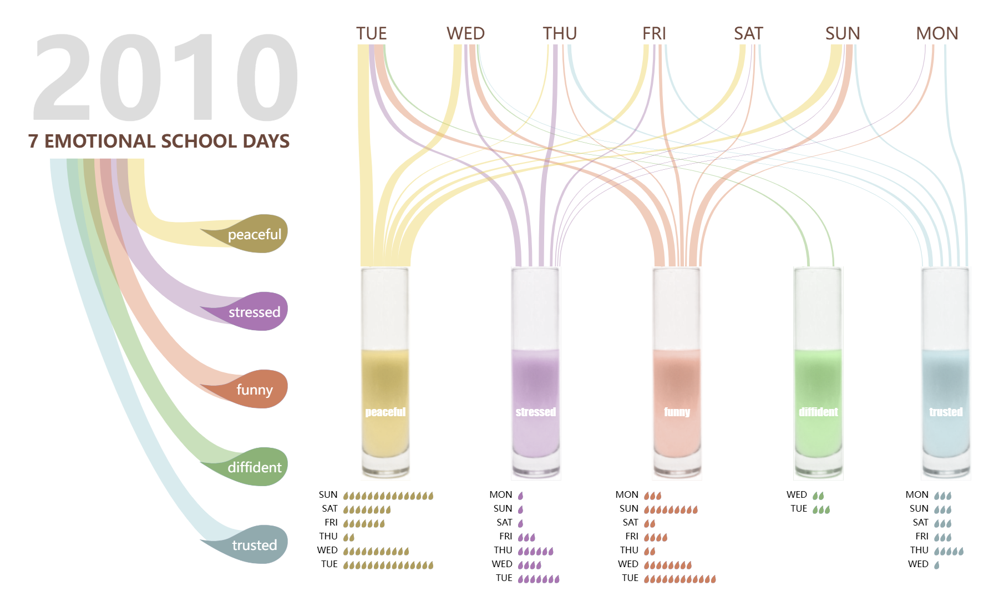
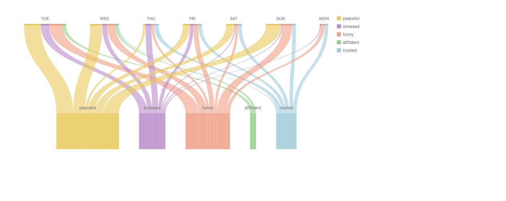
chart(links) // { day, emotion, count }
.flow(
derive(
unpivot({
on: ["day", "emotion"],
variable: "side",
value: "node",
id: "link",
})
),
spread({
by: field("side").sort(["day", "emotion"]),
dir: "y",
spacing: 220,
}),
spread({
by: field("node").sort([...DAYS, ...EMOTIONS]),
dir: "x",
spacing: 36,
}),
stack({ by: field("rank").sort(), dir: "x" })
)
.mark(
rect({ w: "count", h: (d) => (d.side === "day" ? 4 : 90), fill: "emotion" })
)
.layer(ribbon({ by: "link", dir: "y", opacity: 0.6 }));spread({ dir: "y", spacing: 200 }, [
chart(links) // the days: each a stack of its emotions
.flow(
spread({ by: field("day").sort(DAYS), dir: "x", spacing: 60 }),
stack({ by: field("emotion").sort(EMOTIONS), dir: "x" })
)
.mark(rect({ w: "count", h: 4, fill: "emotion" })),
chart(links) // the glasses: each a stack of its days
.flow(
spread({ by: field("emotion").sort(EMOTIONS), dir: "x", spacing: 50 }),
stack({ by: field("day").sort(DAYS), dir: "x" })
)
.mark(rect({ w: "count", h: 90, fill: "emotion" })),
]).layer(ribbon({ dir: "y", opacity: 0.6 }));More natural: proposal 2. The two rows differ in spacing, height and labels, and in proposal 1 they share one node tier. The end order on each side is exact with no rank key: stack by the far node's field. New requirements: a spacing per row (proposal 1 cannot express it); image nodes; a node body larger than its ends.
Beatles songs and their writers (PiCCL)
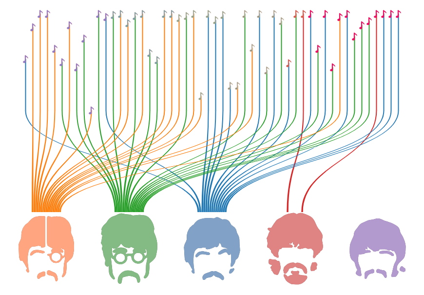
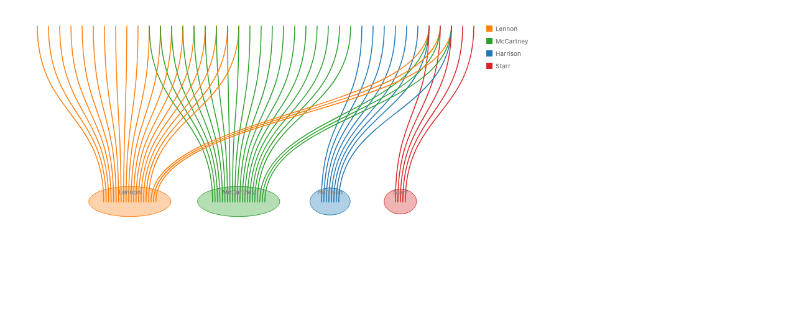
chart(credits) // { song, writer }: one row per credit
.flow(
derive(
unpivot({
on: ["song", "writer"],
variable: "side",
value: "node",
id: "credit",
})
),
spread({
by: field("side").sort(["song", "writer"]),
dir: "y",
spacing: 260,
}),
spread({ by: "node", dir: "x", spacing: 12 }), // songs need 18, heads 90
spread({ by: field("rank").sort(), dir: "x", spacing: 3 })
)
.mark(rect({ w: (d) => (d.side === "song" ? 0 : 1), h: 3, fill: "writer" }))
.layer(line({ by: "credit", dir: "y", curve: Curve.bezier() }));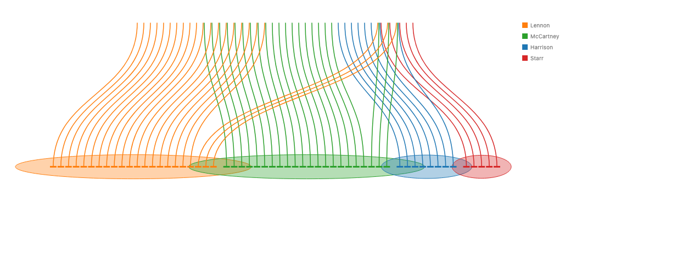
spread({ dir: "y", spacing: 260 }, [
chart(credits) // the songs
.flow(spread({ by: "song", dir: "x", spacing: 18 }), stack({ dir: "x" }))
.mark(rect({ w: 0, h: 3 })),
chart(credits) // the heads: each spreads its songs evenly
.flow(
spread({ by: "writer", dir: "x", spacing: 90 }),
spread({ by: "song", dir: "x", spacing: 3 })
)
.mark(rect({ w: 1, h: 3, fill: "writer" })),
]).layer(line({ stroke: "writer", dir: "y", curve: Curve.bezier() }));
More natural: proposal 2, for the same reason as school
days. Ends spaced evenly instead of sized by value already work in both
proposals: a constant w plus spread spacing.
New requirements: an end-size choice (by value, or equal)
if ends are ever allocated automatically; a spacing per row; an offset per
node; a rule for "same datum" when one song mark carries several credits.
Trade network chord (PiCCL)
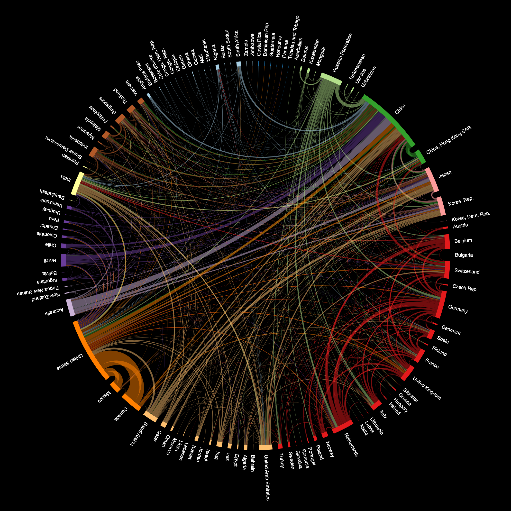
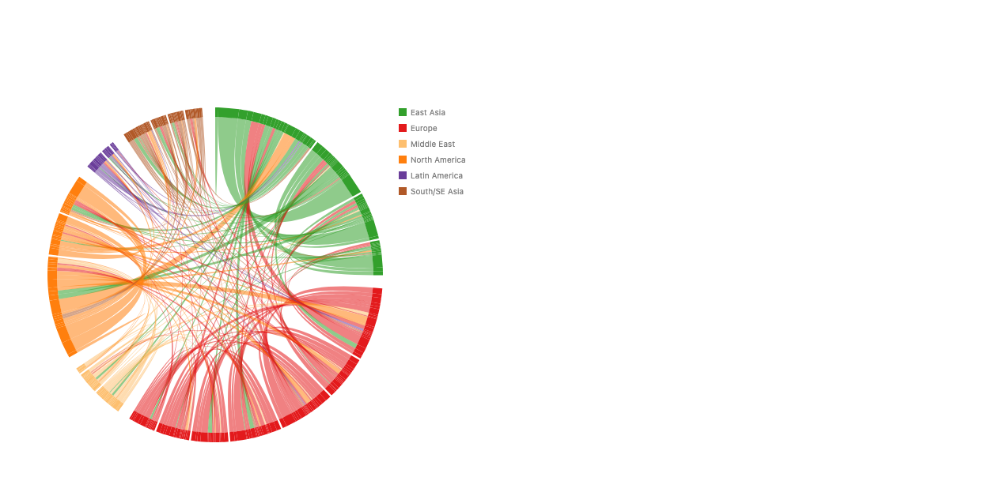
layer({ coord: Coord.clock() }, [
chart(cells) // one row per (from, to) cell: already the ends
.flow(
spread({
by: field("region").sort(REGIONS),
dir: "x",
spacing: 0.03,
y: 200,
h: 12,
}),
spread({ by: field("from").sort(order), dir: "x", spacing: 0.005 }),
stack({ by: field("offset").sort(), dir: "x" })
)
.mark(rect({ w: "value", fill: "region" }))
.layer(ribbon({ by: "chord", at: "bottom", fill: "color", opacity: 0.55 })),
]);const partners = cols(countries); // the wide matrix's columns
layer({ coord: Coord.clock() }, [
chart(matrix)
.flow(
spread({
by: field("region").sort(REGIONS),
dir: "x",
spacing: 0.03,
y: 200,
h: 12,
}),
spread({ by: field("country").sort(order), dir: "x", spacing: 0.005 })
)
.mark(stack({ dir: "x" }, [rect({ w: partners, fill: "region" })]))
.layer(
ribbon({ by: chordPair, at: "bottom", fill: "color", opacity: 0.55 })
),
]);
More natural: proposal 1. The matrix cells already are the
ends. Proposal 2 falls back to an explicit by, because ends (i,
j) and (j, i) are different cells, and its column order cannot change per
row. New requirements: a polar spread whose spacing closes
the full circle at two levels; at: "bottom" with a curve in
screen space; curve tension that depends on how far apart the ends are;
radial labels.
What the harder references say
- Two different rows favor proposal 2 (three of four). When the two sides of a gap differ in spacing, size, order or labels, proposal 1's single node tier forces them to share. Proposal 2 gives each side its own flow, and each side's end order falls out of that flow with no rank key.
- A matrix favors proposal 1. When the data's rows already are the ends, as in a chord, the flat flow is the natural spelling.
-
They are not exclusive. Proposal 2 still needs proposal
1's explicit
ribbon({ by })for pairings that object identity cannot express. -
New cross-cutting requirements:
- a shared-or-independent value scale per child chart (proposal 2 relies on sibling charts sharing one, which the docs say they should not);
- a ribbon that uses facing edges whatever order its refs come in;
- end order that differs per side of a gap;
- equal-size ends as an option next to value-sized ends;
- image nodes.
-
A new bug: an accessor size is put through the scale.
w: 14draws 14 px, butw: (d) => 14draws 36 px. So a table with several kinds of rows cannot give each kind a fixed pixel size.
Terms
- Node
- A bar or arc whose length shows a total: a sankey node, a parallel-sets category, a chord group.
- Link
- One flow between two nodes, with a value.
- End
- The interval where one link meets one node. ggalluvial calls it a lode, d3-chord a subgroup, ELK and Graphviz a port.
- Path
- The chain of ends one ribbon threads: two for a sankey link, one per axis for a parallel-sets cohort.
- Part
-
A named piece of a mark's outline that the mark declares: a rect's
top,right,bottom,left. The coordinate transform carries parts along, so a polar rect'sbottomis its inner arc. Same word as in the label proposal. - Unpivot
-
Turn columns into rows: a row with
sourceandtargetbecomes two rows with asidecolumn. The polars name; dplyr sayspivot_longer. Worked example below.
What unpivot does
unpivot takes some columns of a table and turns them into
rows. For each input row, and for each column named in on, it
writes one output row. That output row gets:
-
a column named by
variable, holding the name of the column it came from; -
a column named by
value, holding that column's value in the input row; -
a column named by
id, holding the input row's position, so every output row remembers which input row it came from; - a copy of every column that is not in
on.
The columns in on themselves are dropped. So a table of
n rows unpivoted on k columns becomes
n × k rows. Nothing is added up or lost: it is
the same data, reshaped from wide to long.
Here it does one job: it turns "one row per link" into "one row per end".
The id column is what lets the ribbon find the ends that
belong together later, through ribbon({ by: id }).
Example 1: a sankey link has two ends
Three real links from the energy data, all touching the node Coal:
| source | target | value |
|---|---|---|
| Coal imports | Coal | 11.606 |
| Coal reserves | Coal | 63.965 |
| Coal | Solid | 75.571 |
unpivot({
on: ["source", "target"],
variable: "side",
value: "node",
id: "link",
});| link | side | node | value |
|---|---|---|---|
| 0 | source | Coal imports | 11.606 |
| 0 | target | Coal | 11.606 |
| 1 | source | Coal reserves | 63.965 |
| 1 | target | Coal | 63.965 |
| 2 | source | Coal | 75.571 |
| 2 | target | Solid | 75.571 |
Read the output column by column. side holds the old column
names, node holds the old values, and
link numbers the input rows. value was not in
on, so it is copied onto both ends of its link.
Now Coal has three rows of its own. The flow groups
rows by node, splits each node by side, and
stacks the rows on each side. Coal's two incoming ends stack on its left
(11.606 + 63.965 = 75.571), and its one outgoing end fills its right.
Then ribbon({ by: "link" }) joins the two rows that share a
link number. For link 1, that is the Coal reserves row and the
lower-left end of Coal.
link.
Example 2: a parallel-sets cohort has one end per axis
Two real rows of the titanic table. Each row is a cohort of passengers, and each of its three category columns becomes one end:
| class | sex | survived | count |
|---|---|---|---|
| First | Female | Yes | 141 |
| First | Male | Yes | 62 |
unpivot({
on: ["class", "sex", "survived"],
variable: "axis",
value: "category",
id: "path",
});| path | axis | category | count |
|---|---|---|---|
| 0 | class | First | 141 |
| 0 | sex | Female | 141 |
| 0 | survived | Yes | 141 |
| 1 | class | First | 62 |
| 1 | sex | Male | 62 |
| 1 | survived | Yes | 62 |
spread({ by: "axis" }) makes the three columns of the picture,
and spread({ by: "category" }) makes the boxes inside each
column. Both cohorts land in the same First box (141 + 62 stacked)
and the same Yes box. They split apart only on the sex axis. One
ribbon per path threads that cohort's three rows from left to
right. This is ggalluvial's "lodes form", and ggforce's
gather_set_data and ggsankey's make_long do the
same reshape.
Two notes on the spelling, both part of decision 3. Polars has no
id option: there you would add the row number first with
with_row_index. And value: "node" names the
new column, which is easy to confuse with a data column that is
itself called value, as in the energy links. dplyr's
names_to / values_to spelling avoids that
confusion, at the cost of leaving the polars names.
Your questions, answered
| From the notes | Answer |
|---|---|
| Extend the existing ribbon API? |
Yes, by two options: by (which rows form one ribbon)
and at (which part each end attaches to). The span
allocation itself does not live on the ribbon.
|
The stack operator, or a method like
ribbon().stack()?
|
The stack operator, applied to the ends inside each
node. ribbon().stack() is Approach C below: it would be
a second route to stacking next to the flow's stack,
which matches the #290 note that a mark-side stack on a connector
can only respell a row stack.
|
| What do enclose, line, cut and labels contribute? |
line: the same ends give parallel coordinates and
stringlines. enclose: draws a node box when in-sum
and out-sum differ (Shape.box(), padding 0).
cut: another way to make ends when the node is one
drawn shape such as an image; for a rect it equals stacking the
ends. labels: node labels are
.label() on the node tier, ribbon labels are
Place.along, and at reuses the label
proposal's part names.
|
| One-to-many, many-to-many? | Ribbons stay one-to-one per link. Splits and merges come from several ends stacking in one node. The energy sankey (69 links, splits and merges) renders this way. |
Today
A ribbon spans the full facing edge of each operand's box. No option attaches it to part of an edge, so every divided-end example builds one node per end and lists ribbons by name. The gallery Sankey Tree is about 137 lines for this reason.

.relate.

Prior work
Every system that draws sankeys correctly stacks link values inside each node and then joins two intervals. The one general grammar without ends, Mascot, attaches every link at its node's middle and gets a thick-edged node-link diagram instead.

d3-sankey
One layout computes columns, node y, and each link's
y0/y1 on both edges.
d3.sankey().nodeAlign(d3.sankeyJustify).nodePadding(10).linkSort(null);
ggalluvial
Long "lodes form": one row per (cohort, axis).
geom_alluvium keeps order through every axis;
geom_flow reorders per gap.
geom_alluvium(aes(fill = Survived))
geom_stratum() # lode.guidance, aes.bind
ggforce
gather_set_data makes long data. One gap, one curvature.
geom_parallel_sets(aes(fill = Sex),
sep = 0.05, strength = 0.5)
ggsankey
make_long gives one row per edge. Sankey and alluvial
differ only by gap and baseline.
make_long(cyl, vs, am, gear, carb)
geom_sankey(flow.alpha = .6, space = 10)
circlize / d3-chord
Sectors sized by total; links stacked in sectors. d3's
ribbon() joins two angle intervals through the center.
chordDiagram(mat, link.sort = TRUE)
d3.chord().padAngle(.05).sortSubgroups(..)
Mascot (foil)
No end concept: every link leaves its node's middle, so widths pile up instead of tiling the edge.
sourceAnchor: ["right", "middle"];
encode(link, "strokeWidth", "value");
Also surveyed: TikZ sankey (\sankeyfork{a}{25/b,10/c}
divides a cross-section into sub-intervals that must sum to the parent, the
closest model to this proposal), the Kibana Vega sankey (stack + lookup +
linkpath, with node and slot stacks kept in sync only by a shared sort key),
ELK port constraints (a ladder of who owns end order), Plotly, Highcharts,
ECharts, networkD3, RAWGraphs, Kosara's Parallel Sets. Fixed chart types
such as geom_sankey and go.Sankey are foils: they
list arrangements instead of composing them.
Approach B: ends are rows
Parallel sets: titanic class, sex, survived
const ends = unpivotEnds(sorted, ["class", "sex", "survived"], "count"); // hand JS + rank key
layer([
chart(ends)
.flow(
spread({ by: "axis", dir: "x", spacing: 120 }),
spread({ by: field("category").sort(), dir: "y", spacing: 12 }),
spread({ by: field("rank").sort(), dir: "y", spacing: 0, axes: false })
)
.mark(rect({ w: 12, h: "value", fill: "class" }).name("ends")),
chart(selectAll("ends"))
.flow(group({ by: "path" }))
.mark(ribbon({ opacity: 0.6, fill: "class" })),
]);chart(titanic)
.flow(
derive(
unpivot({
on: ["class", "sex", "survived"],
variable: "axis",
value: "category",
id: "path",
})
),
spread({ by: "axis", dir: "x", spacing: 120 }),
spread({ by: field("category").sort(), dir: "y", spacing: 12 }),
stack({ by: field("rank").sort(), dir: "y" }) // end order: decision 4
)
.mark(rect({ w: 12, h: "count", fill: "class" }))
.layer(ribbon({ by: "path", opacity: 0.6 }));(
chart(titanic)
.flow(
derive(
unpivot(
on=["class", "sex", "survived"],
variable="axis",
value="category",
id="path",
)
),
spread(by="axis", dir="x", spacing=120),
spread(by=field("category").sort(), dir="y", spacing=12),
stack(by=field("rank").sort(), dir="y"),
)
.mark(rect(w=12, h="count", fill="class"))
.layer(ribbon(by="path", opacity=0.6))
)
.layer(ribbon()): the #786 rule splits by every non-path
tier, and the category key changes along a path, so no ribbon has two
ends. Hence by.
Energy sankey: many-to-many, 48 nodes, 69 links
chart(links) // { source, target, value } + precomputed depth and order
.flow(
derive(
unpivot({
on: ["source", "target"],
variable: "side",
value: "node",
id: "link",
})
),
spread({ by: field("depth").sort(), dir: "x", spacing: 100 }),
spread({ by: field("node").sort(order), dir: "y", spacing: 10 }),
spread({
by: field("side").sort(["target", "source"]),
dir: "x",
spacing: 0,
}), // in-ends left, out-ends right
stack({ by: field("key").sort(), dir: "y" }) // far node's rank
)
.mark(rect({ w: 6, h: "value", fill: "#555" }))
.layer(ribbon({ by: "link", opacity: 0.4, fill: "source" }));
A node is its two end stacks side by side, so its height is the larger
of its in-sum and out-sum. The side spread's
alignment places the slack (TikZ's left/center/right
anchor). enclose({ shape: Shape.box(), padding: 0 }) over
each node's ends draws a box.
Sankey tree: titanic tree
chart(treeEnds) // one row per (leaf, depth), blank keys for missing levels
.flow(
spread({ by: "depth", dir: "x", spacing: 64, alignment: "middle" }),
spread({ by: "class", dir: "y", spacing: 8 }),
spread({ by: field("sub").sort(), dir: "y", spacing: 4 }),
spread({ by: field("leaf").sort(), dir: "y", spacing: 2 }),
stack({ by: field("rank").sort(), dir: "y" })
)
.mark(rect({ w: 40, h: "value", fill: "class" }))
.layer(ribbon({ by: "path", opacity: 0.6, curve: Curve.bezier() }));
About 35 lines against 137 today. Nested gaps are nested
spreads because each end row carries its ancestors' keys.
unpivot does not make the tree shape (one row per depth
with blank keys), so a tree-ends helper is open (decision 8, #738).

Chord diagram: Bostock's hair-color matrix
layer({ coord: Coord.clock() }, [
chart(cells) // { group, other, value, chord: sorted pair, color }
.flow(
spread({
by: field("group").sort(names),
dir: "x",
spacing: 0.04,
y: 160,
h: 16,
}),
stack({ by: field("other").sort(names), dir: "x" })
)
.mark(rect({ w: "value", fill: "group" }))
.layer(ribbon({ by: "chord", at: "bottom", fill: "color", opacity: 0.67 })),
]);layer(
[
chart(cells)
.flow(
spread(by=field("group").sort(names), dir="x", spacing=0.04, y=160, h=16),
stack(by=field("other").sort(names), dir="x"),
)
.mark(rect(w="value", fill="group"))
.layer(ribbon(by="chord", at="bottom", fill="color", opacity=0.67)),
],
coord=Coord.clock(),
)
Each matrix cell is already an end. at: "bottom" attaches
both ends to their inner arc. The band leaves each end along that part's
outward normal, in screen space. The same rule describes today's sankey
bezier (out of right along +x, into left along
−x), so chords need no new curve. In Cartesian coordinates it gives
thick arc-diagram bands.

dir, so bands hug the ring.
How B composes
Desugars into
unpivotis aderivedata helper.by,atare ribbon options.-
Span allocation is
stack. Node and ribbon share one scale by construction, since the ends are the node. - Polar works once
atexists. -
line({ by })over the same ends gives parallel coordinates.
Overlap check
-
stack: exact composition; the end stack is a
stack. - cut: degenerate; for a rect node, cutting by link values equals stacking ends. Cut stays the tool for an image node.
- enclose: none; it draws node boxes.
-
#786 default split:
byoverrides it only when named.
Trade-offs
- Easy: no new layout; cohort identity across axes is free; chords and sankeys share one spec shape.
- Awkward: users think of ends as rows; end order needs a sort key that agrees with the far node; ribbons cannot attach to nodes the flow did not lay out.
-
New terms:
unpivot,by,at, all existing words.
Approach A: the ribbon allocates its own ends
size divides each node's facing
part.
layer([
chart(nodes)
.flow(
spread({ by: "depth", dir: "x", spacing: 100 }),
spread({ by: "name", dir: "y", spacing: 10 })
)
.mark(rect({ w: 12, h: "value" }).name("nodes")),
chart(links)
.flow(resolve(["source", "target"], { from: selectAll("nodes") }))
.mark(
ribbon({ from: "source", to: "target", size: "value", opacity: 0.5 })
),
]);layer(
[
chart(nodes)
.flow(
spread(by="depth", dir="x", spacing=100),
spread(by="name", dir="y", spacing=10),
)
.mark(rect(w=12, h="value").name("nodes")),
chart(links)
.flow(resolve(["source", "target"], from_=select_all("nodes")))
.mark(ribbon(from_="source", to="target", size="value", opacity=0.5)),
]
)
Desugars into a fresh stack of ends per (node, part),
placed with relate() and
Constraint.align span, then one-to-one ribbons. End order
is a sort after the nodes are placed, by the far end's position.
New: a data channel on a connector that must share the
node's scale (same measure), a post-layout sort, a loud error when
ribbon sizes exceed the node, and at.


Easy
- d3-shaped data as-is.
- Nodes from any layout: gotree, scatter, a map.
- Exact crossing-reducing end order, no user sort key.
Awkward
- Node value and ribbon sizes must agree.
- A connector owns a data channel and a scale.
- Parallel sets need one link per gap, losing cohort identity.
Overlap
-
Exact composition only if defined by the rewrite into
relate+stack+ribbon. Otherwise a second stacking mechanism next tostack.
Approach C: ribbon().stack()
position = "stack":
ribbons that share a node stack their ends there.
// sankey
chart(links)
.flow(resolve(["source", "target"], { from: selectAll("nodes") }))
.mark(ribbon({ from: "source", to: "target" }).stack({ size: "value" }));
// and stacked area would gain a second spelling
chart(rows)
.flow(scatter({ by: "year", x: "year" }))
.mark(ribbon({ h: "value" }).stack({ by: "series" }));
Its sankey meaning is exactly A's, so C is A with a method spelling. It
also gives stacked area a second route next to
spread(x), stack(series), which is a large partial overlap
with the flow's stack. By the calls, methods and options
rule, a method reads its caller's state; this one reads every other
ribbon at the same node, which is a set-level operation. No separate
pictures: the outputs are A's and today's stacked area.
Round 2: syntax that follows the data
The shape of the data picks the syntax. spread already has
both forms, so nothing new is needed for the rule itself:
| Data shape | Syntax | Example |
|---|---|---|
| a list (rows, groups) | a flow tier with by: the operator iterates |
the categories on one axis; the links at one node |
| a record (a fixed set of fields) | the direct-style combinator, one child per field | the axes of parallel sets (a record of columns); a node's (in, out) pair |
Parallel sets is a record of axes, each a list of categories, each a list of
rows. A sankey is a list of nodes, each a pair (in-links, out-links), each a
list of links: d3-sankey's node.targetLinks and
node.sourceLinks. A sankey tree is the same thing recursively.
Rows are never copied, so every end of one row is the same datum, and "same
datum, same ribbon" pairs them with no unpivot and no id. The PL precedent
is "the template follows the data definition" from
How to Design Programs.
Parallel sets
chart(titanic)
.mark(
spread(
{ dir: "x", spacing: 120 },
["class", "sex", "survived"].map((axis) =>
chart()
.flow(
spread({ by: axis, dir: "y", spacing: 12 }),
stack({ dir: "y" })
)
.mark(rect({ w: 12, h: "count", fill: "class" }))
)
)
)
.layer(ribbon({ opacity: 0.6 }));chart(titanicR) // rows carry a per-axis end order, rank_<axis>
.mark(
spread(
{ dir: "x", spacing: 120 },
AXES.map(
(axis) => (d) =>
chart(d)
.flow(
spread({ by: axis, dir: "y", spacing: 12 }),
spread({ by: field(`rank_${axis}`).sort(), dir: "y", spacing: 0 })
)
.mark(rect({ w: 12, h: "count", fill: "class" }).name("ends"))
)
)
)
.layer(
chart(selectAll("ends"))
.flow(group({ by: (r) => r.datum[0] })) // same row = same ribbon
.mark(ribbon({ opacity: 0.6, fill: "class" }))
);
Three changes from the target: (d) => chart(d) because a
chart() child of spread does not inherit its
scope (it throws; layer already does this in one line); an
explicit ribbon tier grouped by the source row; and
spread({ spacing: 0 }) instead of stack (the
stack scale bug).
Parallel coordinates (penguins, four measurements)
chart(penguins)
.mark(
spread(
{ dir: "x", spacing: 120 },
DIMS.map(
(dim) => (d) =>
chart(d)
.flow(scatter({ y: dim }))
.mark(circle({ r: 1.5, fill: "Species" }).name("pts"))
)
)
)
.layer(
chart(selectAll("pts"))
.flow(group({ by: (r) => r.datum[0] }))
.mark(line({ stroke: "Species", opacity: 0.3 }))
);
The lines join correctly, but all four axes share one y scale (0 to 6500
g), so the three mm axes lie flat. No syntax asks for an independent
child scale today, and even two separate charts side by side share one
domain, which contradicts rule 3 of how-axes-work.md. The
working render uses per-axis normalized columns with ticks turned off: a
declared shortcut.
Sankey: a list of nodes, each a pair of link lists
chart(nodes)
.flow(
spread({ by: field("depth").sort(), dir: "x", spacing: 100 }),
spread({ by: field("name").sort(order), dir: "y", spacing: 10 })
)
.mark((node) =>
spread({ dir: "x", spacing: 0 }, [
chart(node[0].in)
.flow(spread({ dir: "y", spacing: 0 }))
.mark(rect({ w: 6, h: "value" }).name("ends")),
chart(node[0].out)
.flow(spread({ dir: "y", spacing: 0 }))
.mark(rect({ w: 6, h: "value" }).name("ends")),
])
)
.layer(
chart(selectAll("ends"))
.flow(group({ by: (r) => r.datum[0] })) // a link's two ends share its object
.mark(ribbon({ opacity: 0.4, fill: "source" }))
);
Starts from the d3 inputs (nodes and links), with no unpivot and no ends
table. nodes gets in/out list
fields holding the same link objects from a nest join (dplyr
nest_join; polars
group_by().agg(pl.all()) then a join). A filter on
links inside the callback works too. The function in
.mark() receives the group's rows, so the node is
node[0].

Removing the callback: the equivalent of group({ by })
The .map(callback) hides two different iterations. Each has a
callback-free precedent, and both render pixel-identical to the versions
above (emulated with story-local helpers).
const axes = cols(["class", "sex", "survived"]);
chart(titanic)
.mark(
spread({ dir: "x", spacing: 120 }, [
chart()
.flow(spread({ by: axes, dir: "y", spacing: 12 }), stack({ dir: "y" }))
.mark(rect({ w: 12, h: "count", fill: "class" })),
])
)
.layer(ribbon({ opacity: 0.6 }));
A child that mentions a multi-column value stands for one child per
column, the way polars expands
pl.col(["a", "b"]).sum() into one expression per column
(dplyr: across). The expansion happens only in a
combinator's child list, so a tuple of columns becomes a tuple of
children. Two multi-column values in one child must have the same length
and zip.
chart(nodes) // { name, depth, in: [links], out: [links] }
.flow(
spread({ by: "depth", dir: "x", spacing: 100 }),
spread({ by: "name", dir: "y", spacing: 10 })
)
.mark(
spread({ dir: "x", spacing: 0 }, [
chart(field("in"))
.flow(stack({ dir: "y" }))
.mark(rect({ w: 6, h: "value" })),
chart(field("out"))
.flow(stack({ dir: "y" }))
.mark(rect({ w: 6, h: "value" })),
])
)
.layer(ribbon({ opacity: 0.4 }));
A child's data is a list field of the parent row, as in d3's nested
selections (selection.data(d => d.children)). The
emulation spells it chart().flow(unnest("in"), ...). A
sankey tree is this rule applied recursively to a
children field.
The sankeys in round 2 syntax
Each spec below is the callback-free target spelling. The render next to it
comes from an emulation with story-local helpers (inherit,
unnest, stackedEnds, treeRibbon) that
rewrites it into today's API, and every rect and ribbon matches the
working-today version. The working-today code is in the collapsed blocks.
Energy sankey: a list of nodes, each a pair of link lists
// nestJoin(nodes, links): each node gets in / out lists of the SAME link objects
chart(nodes)
.flow(
spread({ by: field("depth").sort(), dir: "x", spacing: 100 }),
spread({ by: field("name").sort(order), dir: "y", spacing: 10 })
)
.mark(
spread({ dir: "x", spacing: 0 }, [
chart(field("in"))
.flow(stack({ dir: "y" }))
.mark(rect({ w: 6, h: "value" })),
chart(field("out"))
.flow(stack({ dir: "y" }))
.mark(rect({ w: 6, h: "value" })),
])
)
.layer(ribbon({ opacity: 0.4, fill: "source" }));
The spec reads like the data: a list of nodes (flow), each a pair
(direct style), each side a list of links (flow). A link appears once in
its source's out and once in its target's in,
so the ribbon joins those two ends. End order is the order of the
in and out lists, which the nest join sorts by
the far node's rank. Column assignment and in-column order are still
precomputed.
Working today
chart(eNested, { axes: false })
.flow(
spread({
by: field("depth").sort(),
dir: "x",
spacing: 100,
alignment: "start",
}),
spread({ by: field("name").sort(eOrder), dir: "y", spacing: 10 })
)
.mark((node) =>
spread({ dir: "x", spacing: 0, alignment: "start" }, [
chart(node[0].in)
.flow(spread({ dir: "y", spacing: 0 }))
.mark(rect({ w: 6, h: "value", fill: "#555" }).name("ends")),
chart(node[0].out)
.flow(spread({ dir: "y", spacing: 0 }))
.mark(rect({ w: 6, h: "value", fill: "#555" }).name("ends")),
])
)
.layer(
chart(selectAll("ends"))
.flow(group({ by: (r) => r.datum[0] }))
.mark(ribbon({ opacity: 0.4, fill: "source", curve: Curve.bezier() }))
);Sankey tree: a node is a box and a list of children
// nestTree(titanic, ["class", "sex", "survived"], "count"): { name, count, children }
const box = rect({ w: 40, h: "count", fill: "class" });
const node = (gap, child) =>
spread({ dir: "x", spacing: 64, alignment: "middle" }, [
box,
chart(field("children"))
.flow(spread({ dir: "y", spacing: gap }))
.mark(child),
]);
chart(tree)
.flow(spread({ by: "class", dir: "y", spacing: 8 }))
.mark(node(4, node(2, box)))
.layer(ribbon({ opacity: 0.6, fill: "class" }));
Each level is the same record (a box, then a column of children), nested
once per depth. The gaps narrow with depth (8, 4, 2), so
node takes its gap. One spelling is still missing. The
ribbon must leave a sub-interval of the parent's right edge, one per
child, sized by the child's count, but the children column is taller
than the box because of the gaps. The emulation gives each box
zero-width end rects, one per child (stackedEnds). In the
target spelling, either the ribbon allocates those ends from
h (Approach A's size) or the box declares
them. That is an open question for the tree.
Working today
const GAPS = [8, 4, 2];
const box = (n) =>
chart([n]).mark(rect({ w: 40, h: "count", fill: "class" }).name("box"));
const ends = (n) =>
chart(asEnds(n.children))
.flow(spread({ dir: "y", spacing: 0 }))
.mark(rect({ w: 0, h: "count" }).name("box"));
const level = (nodes, depth) =>
chart(nodes)
.flow(spread({ dir: "y", spacing: GAPS[depth] }))
.mark(([n]) =>
n.children.length === 0
? box(n)
: spread({ dir: "x", spacing: 64, alignment: "middle" }, [
spread({ dir: "x", spacing: 0, alignment: "start" }, [
box(n),
ends(n),
]),
level(n.children, depth + 1),
])
);
level(tree, 0)
.layer(
chart(selectAll("box"))
.flow(
filter((r) => project(r, "depth") === 1),
endsFirst,
group({ by: "key" })
)
.mark(ribbon({ opacity: 0.6, fill: "class", curve: Curve.bezier() }))
)
.layer(
chart(selectAll("box"))
.flow(
filter((r) => project(r, "depth") === 2),
endsFirst,
group({ by: "key" })
)
.mark(ribbon({ opacity: 0.6, fill: "survived", curve: Curve.bezier() }))
);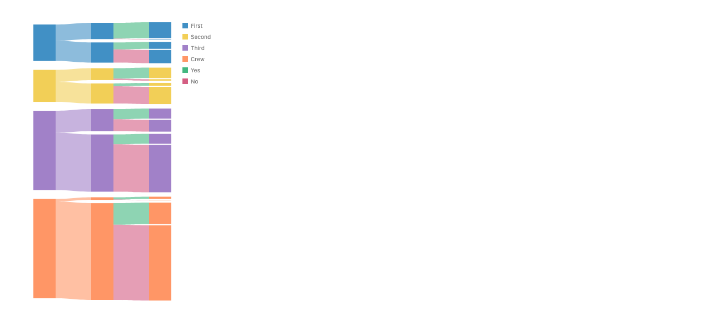
Sankey tree as one recursive mark
const node = (self) =>
spread({ dir: "x", spacing: 64, alignment: "middle" }, [
box,
chart(field("children"))
.flow(spread({ dir: "y", spacing: 4 }))
.mark(self),
]);
chart(tree)
.flow(spread({ by: "class", dir: "y", spacing: 8 }))
.mark(fix(node)) // node refers to itself; stops at empty children
.layer(ribbon({ opacity: 0.6, fill: "class" }));
For any depth. fix is the textbook fixed point (fix(f) = f(fix(f)), made lazy), emulated in the story. Its costs in the render: one gap
at every depth (8/4/4), an empty column after each leaf, and a picture
taller than asked. A real version needs a lazy self-reference and a gap
that can read the node's depth.
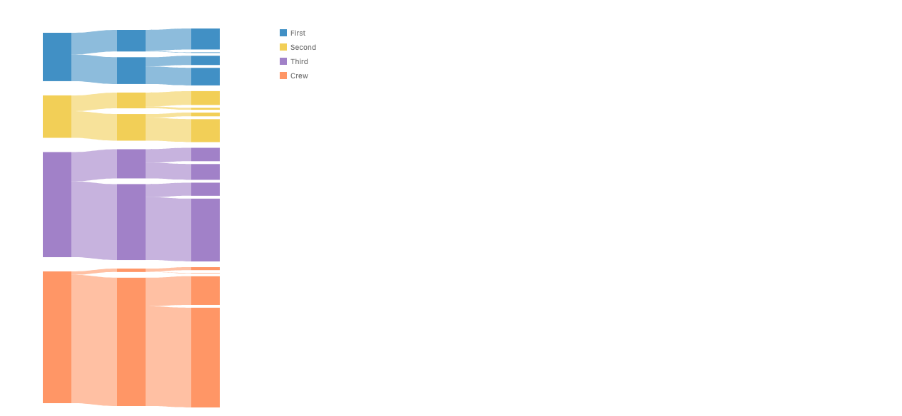
What round 2 would need
-
Combinator scope.
spread,stackand the other operator combinators should pass their scope to achart()child, aslayerdoes. One line; it is a bug fix more than a design change. - Independent child scales. Children that read different fields need their own domains (parallel coordinates). This is the one real gap, and it touches the axis rules (#1032 chrome at chart boundaries).
-
Ribbon identity by default. A ribbon over a record-shaped
combinator joins ends that came from the same datum, so
.layer(ribbon())works without the explicitselectAll+grouptier. -
Python and the wire. Object identity does not survive
serialization: a columnar Python or IR version copies rows. There the join
needs a row or link id after all, so
unpivot'sidcomes back in another form. -
Bugs found: a
byfunction receives the ref rather than the row (contradicting theprojectBydoc comment), sogroup({ by: r => r })silently draws nothing; a "depth" axis appears despiteaxes: falsein the.layerform; the stack scale bug again. -
Ribbons can run backwards.
selectAlllists nodes in the order their layout finished, not document order, and a two-end ribbon always runs from its first end's right edge to its second end's left edge. 28 of the energy sankey's 68 ribbons run backwards; painting hides it. Fix: document-orderselectAll, or ribbons that use facing edges whatever the order. -
Ends need a spelling in the tree. A parent-to-child
ribbon needs a sub-interval of the parent's edge per child. Either the
ribbon allocates it (Approach A's
size) or the box declares its ends.
Round 1 vs round 2
| Round 1: ends are rows | Round 2: syntax follows the data | |
|---|---|---|
| Data you start from | reshaped long (unpivot) |
as it is: wide rows, or d3's nodes + links (plus a nest join) |
| Ribbon identity | an id column, ribbon({ by }) |
same datum, same ribbon (an id again in Python) |
| Per-axis types and scales | lost: one mixed category column |
kept, once child scales exist |
| New core | unpivot, ribbon({ by, at }) |
combinator scope, child scales, ribbon default, cols,
nested child data, at
|
| Parallel coordinates | no (mixed types) | yes, once child scales exist |
| Chord | yes, with at |
same (each group is a list of matrix cells) |
My read: round 2 is the better match for what users have
(wide tables, d3-style node and link lists) and keeps types on fields, which
round 1 cannot. Its cost is three core pieces, of which independent child
scales is the only real design work. Round 1's unpivot stays as
the converter for data that arrives in the other shape. I'd pick round 2 if
you're comfortable with expression expansion in child lists. Otherwise,
round 2 with the explicit .map still works today.
Why B
- It desugars into the existing core (principles, "Why keep the core small"). Three of four hard examples needed no core change. The fourth, chords, needs parts, which labels need too.
-
One concept, one operator (api-design, "Operators and
marks"). Span allocation is
stack; A and C add a second stacker unless defined by rewrite. - Data flows as lists. An end is a row, like ggalluvial's lodes form and circlize's "row order is slot order".
- It realizes #745. Ribbons stay one-to-one per row; the per-edge span allocation turned out to be the flow's stack.
-
Names from precedent.
unpivotfrom polars,bythe family key,atand part names from the label proposal. Same shape in JS and Python.
What would change the pick to A: ribbons over nodes placed by something other than the flow (gotree trees, node-link diagrams, flow maps) becoming a priority, or crossing-reducing end order proving impossible to state as a data sort. A can later be added as sugar defined by rewrite into B's pieces, so picking B does not close it off.
Out of scope: sankey node layout (column assignment, in-column relaxation; #701, #631) and fill-the-height gaps (#1165). Both showed up in the energy prototype; neither is about divided ends.
Decisions for you
-
Is "ends are rows" the model, with span allocation done by the flow's
stack(B), rather than by the ribbon (A)? -
Bring
byback onribbonandlineas the ribbon's identity (ribbon({ by: "link" })), with travel order from the outermost tier? -
unpivot({ on, variable, value, id })insidederive: keep the polars name, and create the row id in the same call rather than a separatewithRowIndexstep? - End order: ship with a user sort key (a declared shortcut) and add a far-end order strategy later? Default per node (alluvium) or per side of each gap (flow)?
-
ribbon({ at: "bottom" })with the label proposal's part names, plus the rule that a ribbon leaves each end along that part's outward normal in screen space? -
Slack when in-sum and out-sum differ: default
alignmentstart(as d3) ormiddle? - Keep sankey node layout (columns, in-column order, fill-the-height gaps) out of this design, as separate issues?
- A tree-ends helper for sankey trees: here, or with #738?
-
Round 2: make "syntax follows the data" the primary spelling (a record
becomes direct-style children, a list becomes a flow), keeping
unpivotonly as a converter? -
Expression expansion: may a combinator child that mentions
cols([...])stand for one child per column, as polars expandspl.col([...])? -
Nested child data:
chart(field("in"))(orunnest) for a parent's list field, plus anestJoinhelper to build it from flat tables? - Independent child scales: should direct-style children that read different fields get their own domains by default, or by an explicit option?
Syntax to review
| New spelling | Meaning |
|---|---|
derive(unpivot({ on, variable, value, id }))unpivot(on=..., variable=..., value=..., id=...)
|
Columns to rows, keeping a row id that names the path or link. |
ribbon({ by }), line({ by }) |
Rows that share the key form one ribbon. Removed in #786; returns with this narrower meaning. |
ribbon({ at: "bottom" }) or
{ at: { from, to } }
|
The part each end attaches to. Default is today's facing edges along
dir.
|
Bugs found while prototyping
-
A data-sized
stackunder twospreads gets its own scale per column when columns have different child counts (workaround:spread({ spacing: 0 })). -
A y
spreadorders groups top-down; a ystackorders them bottom-up. -
filterover a refs bag seesref.datumas a bag, sor.datum.depthis undefined and everything is silently dropped. -
In polar,
spreadwithspacingstops near 225° instead of closing the circle. -
chart(..., { legend: false })on a non-root layer is ignored. -
The polar bake treats only
connectandtweenas relational leaves (a hard-coded type list). -
resolveGroupPaintresolvesfill: "<field>"only for registered types.
Repo copy: proposals/stacked-ribbons/proposal.md on branch
worktree-stacked-ribbons-proposal. Prototype stories:
packages/gofish-graphics/stories/_proposals/stacked-ribbons/.
Every spec and workaround: proposals/stacked-ribbons/NOTES.md.